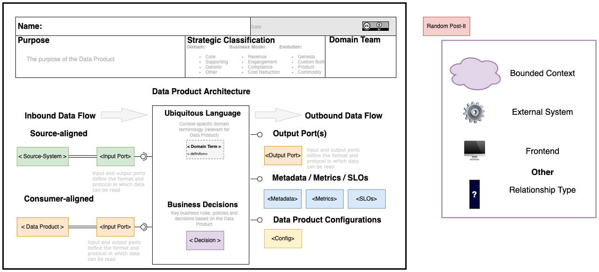

Data Product Examples: What can be a Data Product? TODO: REWRITE What could be a candidate for a Data Product? In general, any data representation that has value for users can be a good candidate. You can find a couple of examples in the following enumeration:
- Simple files: For example, results of a series of measurements taken on geological samples, Excel reports, or data in CSV format exported from the application/ In this case description in the form of metadata can also be crucial in their further use.
- A data set inside a database (or data storage in general): Containing a read-optimized representation of data from a source system (system of records).
- A data set built based on data retrieved from a COTS-type system (commercial off the shelf): For example, containing information about stock levels.
- REST API: Data exposed from applications to read transactional data, optimized for reading, optionally supporting HATEOAS to facilitate automated (machine consumable) data consumption.
- Data stream representing the history of changes to the application: For example, events that relate to changes made within a billing account.
- Data stream representing snapshots of data entities from a transaction system: For example, information about a system user.
- Data mart: Representing data enabling multidimensional analysis of sales results.
- Local data lake or part of a bigger data lake: Used to build a view used as a basis for analysis of watching movies statistics.
- MDM-type database (master data management): Containing an integrated view on system users (personal information, viewing preferences, viewing time preferences, payment information, rating information, etc.).
- Raw unstructured files: For example, images generated by geological sampling equipment or videos uploaded by users of a video portal; however, to be useful to end-users, they should be accompanied by sufficient metadata that describes them.
The Anatomy of Data Product. To ensure the interoperability, Data Products need to be standardized so that other domain teams can immediately consume in a convinient way. Core elements of the Data Product specification:
- Input Ports
- Core data unit and transformations
- Output Ports
Architecting Data Product. Data Product Canvas is a visual framework that guides your team through the Data Product specification.
TODO: Adopt the following canvas
